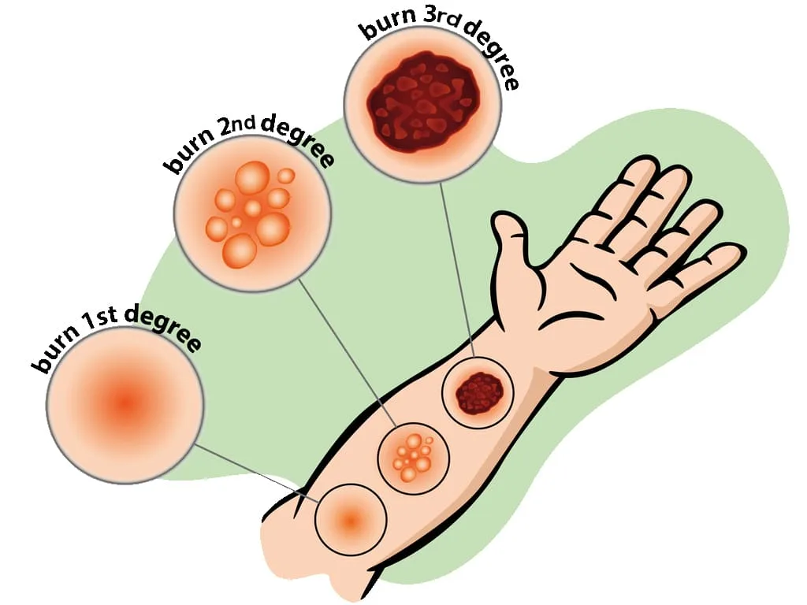
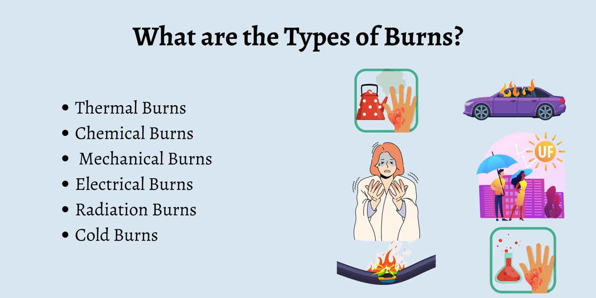
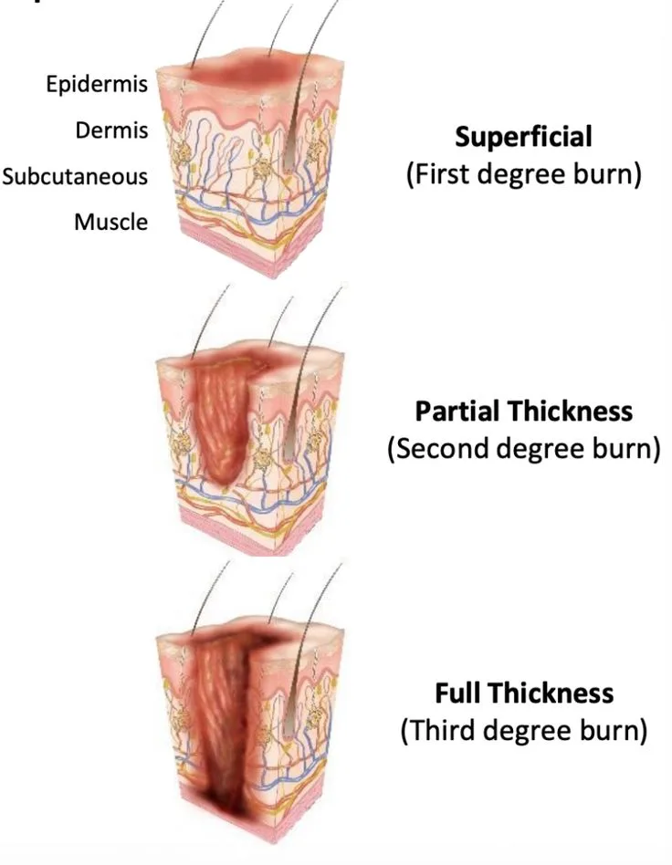
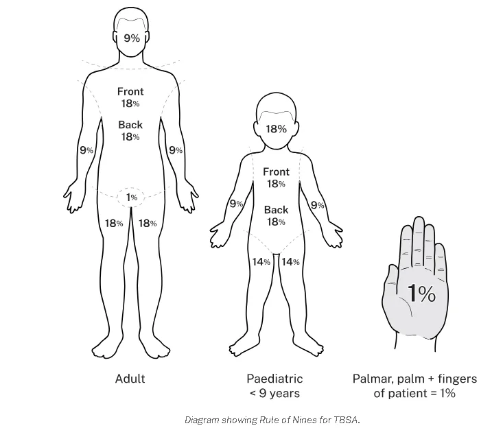
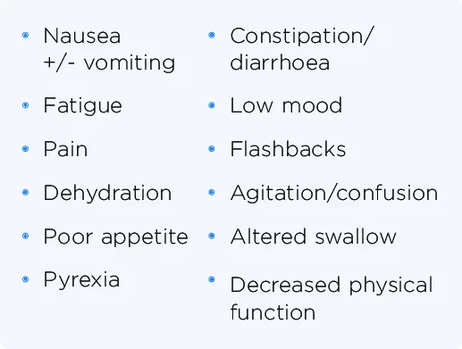

Expanded Nursing Uganda Explanation
Burns should be understood beyond a short definition. Link the concept to patient history, focused assessment, common risks, nursing priorities, documentation and evaluation of outcomes.
Contents, 21 sections (tap to expand)
01 BURNS
Burns are injuries to the skin due to extremes of temperature i.e cold or hot, chemicals or radiations. Burns occur when there is injury to the tissues of the body caused by heat, chemicals, electric current or radiations.
- Skin is the largest organ of the body that protects against injury, loss of fluid and from infection.
- It also maintains a constant body temperature with sebum, hair follicles. The skin has got two layers;
- - Epidermis (outer layer)
- Under the skin is sebaceous tissue mainly fat.
- The top part of the skin (epidermis) is made up of fat cells which are constantly shed and are replaced by new cells which come from underneath the layer.
- The epidermis has got an oily layer called sebum produced by sebaceous gland. It prevents heat loss (it thickens when it’s cold).
- Sebum makes the skin water proof, makes skin supplies plethoric.
- The dermis contains blood vessels, nerve, muscles, sweat glands, hair follicles, sebaceous glands; the ends of the sensory nerves in the dermis register sensation from the body surface.
02 TYPES OF BURNS
These can be caused by flame, flash, scald, or contact with hot object.
These are the result of tissue injury and destruction from necrotizing substance. Chemical burns are most commonly caused by acids; however alkalis can also cause a burn e.g. cleaning agents, drain cleaners and lye’s.
These result from coagulation necrosis that is caused by intense heat generated from an electrical current. It can also result from direct damage to nerves and vessels causing tissue anoxia and death. The severity of the electrical injury depends on the amount of voltage, tissue resistance, current pathways, and surface area in contact with the current and on the length of time the current flow was sustained.
It results from inhalation of hot air or noxious chemicals that can cause damage to the tissues of the respiratory tract. Smoke inhalation injuries are an important determinant of motility in the fire victims.
- Carbon monoxide poisoning.
- Inhalation injury above the glottis, it is thermally produced and above is chemically produced.
- Inhalation injury below the glottis is related to the length of exposure to smoke or toxic fumes.
These are due to extreme cold temperatures e.g. frost bite, freezing metals.
I.e. sun burn, radiation therapy, medical therapy e.g. treatment of cancer of the cervix.
Are injuries caused by moist heat, and hot liquids?
03 CLASSIFICATION OF BURN INJURY
Burns are classified according to;
- Depth of the burn.
- Extent of the burn.
- Location of the burn.
In the past, burns were defined by degrees; first degree, second degree and third degree burns. They now advocate more explicit definition categorizing the burn according to the depth of skin destruction.
- SUPERFICIAL BURNS: Involves only the outer most skin layer. They have redness, swelling, and tenderness. It usually heals well, if first aid is given promptly and if blisters don’t form. Burns from sun, charcoal stove. Are also known as first degree burns.
- PARTIAL THICKNESS BURNS: The damage to epidermis is severe, we almost always have blister formation and very painful. Completely destroys the epidermis. Blisters form because of fluid released from the damaged tissue, usually heal well but may be fatal if more than 30% of skin is involved. Also known as second degree burns.
- FULL THICKNESS/DEEP BURNS: The dermis is involved including other structures like muscles, bones. All layers involved blood vessels, fat and nerves. There is either no pain or minimal. This may mislead that the burns are not severe. You need immediate help; the skin is pale and charred (like toasted meat).
- The location of the burn wound is related to the severity of the burn injury. Burns to the face and neck and circumferential burns of the chest may inhibit respiratory function by virtue of mechanical obstruction secondary to edema or scar formation.
- These injuries may also indicate the possibility of inhalation injury and respiratory mucosal damage.
- Burns of the hands, feet, joints, and eyes are of concern because they make self-care very difficult and may jeopardize future function.
- The ears and nose, composed mainly of cartilage, are susceptible to infection because of poor blood supply to the cartilage.
- Burns of buttocks and genitalia are highly susceptible to infection.
- Circumferential burns of the extremities can cause circulatory compromise distal to the burn with subsequent neurologic impairment of the affected extremity.
- Patient may develop compartment syndrome from direct heat damage to the muscles, multiple intravenous access attempts or pre burn vascular problems.
04 EXTENT OF A BURNT AREA.
Two commonly used guides for determining the total body surface area (TBSA) affected or the extent of a burn wound are the Lund-Browder chart and rule of nines. Only partial thickness burns and full thickness burns are included when calculating the burnt area because it is more accurate. The patient’s age, in proportions to relative body area size, is taken into account. For irregular or odd-shaped burns, the palmar surface of the patient’s hand is considered to be approximately 1% of the TBSA.
- Head and neck is 9% (NB. The head alone is 8% and the neck is 1%).
- Each arm is 9% (both arms carry 18%).
- Anterior trunk-18% (chest and abdomen).
- Posterior trunk-18% (from neck to symphysis, coccyx).
- Each lower limb-18% (both limbs 36%).
- Perineal/genital area-1%.
- Head -18%
- Arms -9%
- Chest and trunk -18%
- Back of trunk -18%
- Legs -14%
- Perineal and genital area -1%
- Head 7%
- Neck 2%
- Anterior trunk 13%
- Posterior trunk 13%
- Rt buttock 2.5%
- Lt buttock 2.5%
- Genitalia 1%
- Rt upper arm 4%
- Lt upper arm 4%
- Rt lower arm 3%
- Lt lower arm 3%
- Rt hand 2.5%
- Lt hand 2.5%
- Rt thigh 9.5%
- Lt thigh 9.5%
- Rt leg 7%
- Lt leg 7%
- Rt foot 3.5%
- Lt foot 3.5%
- Total 100%
05 PREDISPOSING FACTORS & ASSESSMENT
- Age, children and old (weak)
- Disease-commonly epilepsy, leprosy
- alcoholism, and cigarette smoking
- Occupation-e.g. electricians, industrial workers, alcohol brewers
- Poverty e.g crowded kitchen.
- Fights (wrangles and conflicts)
- Race e.g. frost bite common in whites
- Skin bleaching.
- History of involvement with any of the cause of burns.
- Blistering due to vasodilation hence collection of serum between the dermis and epidermis.
- Necrosis due to coagulation of proteins.
- Functional impairment of the temperature regulation process of the burnt area.
- Shock due to fluid loss and blood loss (hypovoleamic shock).
- Shock can also occur due to severe pain (neurogenic shock).
- Toxaemia depending on the type and cause of burns. Histamines and adenocytes produced are released from the burnt surface and they find their way into the blood stream.
- Circumstances and cause of burns i.e. where and when did it occur.
- Was the airway affected? Assess whether it was in closed spaces (inhaled hot gases).
- Assess the extent, location and depth. The bigger the burn, the higher the extent (%) the greater the surface area.
06 CRITERIA FOR ADMISSION OF BURNT PATIENT.
- Burns involving the airways
- Full thickness.
- Admit all children for observation
- The bigger the surface area above 5% superficial burns.
- Special areas involved e.g. face, hands, joints, neck, and genitalia.
- Circumferential burns give a tourniquet effect may cause gangrene.
- Electric burns because all electric burns are said to be deep until proved otherwise.
- Chemical burns, can continue burning for several days.
- If you are not sure; below 15% burns, GIT absorption is intact, oral route work in fluid replacement.
07 FIRST AID FOR BURNS.
- Maintain an open airway.
- Minimize the risk of infection
- Treat any other associated injuries
- Make sure you watch for signs of shock.
- Make sure you check for signs of respiratory distress.
- Decrease temperature /stop fire if possible.
- Call for help.
- Evacuate the patient; pour water on the affected area.
- Undress the patient.
- Assume the airway has been affected until proved otherwise continue pouring water on the burnt area for minimally 20min to reduce injury i.e neutralized heat.
- Lie patient down but avoid the burnt area touching the ground.
- Pour water on burns for 20mins.
- Continue pouring water until pain stops.
- Put on gloves.
- Remove rings, shoes, watches, necklace, belts, stockings and clothes before tissue damage.
- Cover the injured area with sterile cloth or sterile dressing.
- Record details of injuries.
- Regularly monitor and record the vital signs and the level of consciousness, urine output.
- Treat shock if present.
- Re-assure and give words of hope.
- Avoid over cooling the patients especially children and elderly because they may get hypothermia.
- Do not remove anything stuck on the burnt wound to prevent spread of infections and more injuries.
- Do not touch the burnt area with your fingers.
- Do not apply lotions on the burn apart from anti-septic.
- Do not burst any blisters.
- If burns are on the face do not cover them for easy assessment of respiratory distress.
08 FOR AIRWAY BURNS
Burns of the face, mouth, throat, nose, airway passages, are serious because the airway passage rapidly becomes swollen because of inflammation.
- History taking.
- Respiratory rate increased.
- Examine the nostrils i.e there is no soot.
- Examine the nasal hair i.e if they are burnt, short with a Taft.
- There would be damaged to the skin around the nose and mouth.
- Has difficulty in breathing.
- Has hoarse voice due to inflammation of vocal cords.
- To recognize the airway burns.
- To maintain the airway and after take the patient to hospital management.
- Open the mouth (airway) and check whether he is breathing.
- Sweep the tongue.
- If not breathing, give rescue breaths, mouth to mouth. Put patient in a recovery position and call for help.
- Take the steps to improve the airway e.g remove clothes or unbutton, clear the place.
- Re assure the patient.
- Monitor and record vital observations until help arrives.
Put patient on oxygen therapy. Intubate the patient with endotracheal tube, connected to oxygen cylinder.
09 FOR CHEMICAL BURNS
The commonest cause of chemical burns in Uganda are domestic fights and it’s commonly women to women.
- Ensure your safety.
- Disperse the powerful chemical by wiping away the chemical, pouring water (plenty) for about 30min. This dilutes the chemical.
- Arrange to transfer patient to hospital but label the chemical if you have identified it.
- Do not attempt to neutralize the chemical with another chemical.
- Ensure that you remove contaminated clothing.
- If the face has been burnt, expect the burns of the airway. Make sure that the airway is open and functioning.
- There may be chemicals in the vicinity.
- The pain is intense and stinging (itching).
- Later discoloration, blistering and peeling of the skin forming wound.
- Supportive treatment with anti-inflammatory drugs, anxiolytics, painkillers.
- Re-assure the patient.
10 FOR ELECTRIC BURNS
These occur when electricity passes through the body, person a conductor through which electricity passes. Most of the visible damage occurs at points of entry and exit of the current. You may have an internal tract where wounds are mainly concentrated. The current follows mainly muscle, nerves and blood vessels. If it follows the nerves, it can cause cardiac arrest which is the commonest cause of death in electric burns.
The current will cause muscle spasms which may prevent patient from breaking contact with electric source hence continues electric shock. Switch off the main switch. Do not touch a patient with live hands or metallic materials to break the contact. Assess the ABC immediately. Shout for help. Be safe, do something and waste no time.
- Ensure your safety first.
- Ensure that electric source is disconnected or blocked i.e you may use your shoes or clothes to disconnect the source from patient.
- Flood the exit and entry points with water to cool the burn and prevent further burning process.
- Protect the burn from infection.
- Re-assure
- Give treatment for shock.
11 ASSESSMENT FOR BURNS TO THE EYE.
Patient is usually unconscious or semi-conscious. If eyes are burnt with chemicals, it will cause scarring and blindness so gets water and wash the eyes to dilute and disperse the acid. Let them not rub the eyes (don’t touch the eyes), continue pouring water in the eyes.
- Continue watering the eyes
- Swollen
- redness
- Have gloves on.
- Lie the patient with the affected eye low and most so that water does not affect the rest of the face.
- Open that eye and run cold water for more than 30 minutes.
- Make sure that the water is penetrating into all parts of the eye. Open eye with your hands if they cannot open.
- Get a clean bandage and close the eye until the opthalmist comes.
- Try to identify the chemical and record or label.
12 GENERAL MANAGEMENT OF BURNS
- To arrest bleeding.
- To prevent the condition from worsening.
- To preserve life.
- To correct electrolyte imbalances. Etc
N.B Burns with a TBSA greater than 15% the following is done. It is a surgical emergency so quit assessment and immediate care is needed plus quick admission. (Immediate nursing care).
Through opening and clearing the airway, In case of a suspected cervical spine, keep movements of the neck to a minimum and never hyperflexion or hyperextend to head or neck. If smoke inhalation is suspected intubate before oedema makes it difficult. The head of the bed is elevated and nasal pharynx suction is done incase of excessive secretions.
Expose the chest and make sure that chest expansion is adequate. Always provide oxygen in severe burns or when inhalation injury is suspected give 4-8 hr/min. Assess breathing sounds and respiratory rate. Monitor for hypoxia. Encourage aggressive pulmonary care e.g. turning, coughing and deep breathing.
Stop bleeding with direct pressure. Check capillary if greater than 2secs it means hypovolaemia. Monitor pulse and check pallor which occurs with 30%. Insert 2 large bore peripheral IV lines in superficial burns.
This is done through using a glasgowcoma scale. This helps to check the levels of consciousness that is checking;
- Alertness (A)
- Response to vocal stimuli (V)
- Response to painful stimuli (U)
- Unresponsive.
Examine the pupils for light reaction. Hypoxia can cause reduced levels of response. Keep the patient flat and covered with a sterile sheet to relieve the pain induced by circulatory air currents. Keep the patient warm and check for any adherent clothing, cut around it, when removing the cloth i.e cut around the edges of the clothes disturbing the wound as little as possible.
13 GENERAL NURSING CARE OF A BURN PATIENT
All attendants must wear capes, gowns, masks and cover shoes. Hands should be washed thoroughly. Cleaning should consist of sloughing skin and use of aseptic solution like hibitane or savlon, the surface is then dried with warm air or sterile dressing (gauze). Afterwards the burnt area is treated by either the exposure method or closed of dressing.
- Nurse the patient in a special room to prevent infections (burns are normally sterile). Make sure that you maintain asepsis as much as possible.
- Avoid touching the wound with bear hands i.e. use sterile gloves and use a disinfectant after attending to the patient.
- You must have a mask while examining the patient.
- Use the mosquito net to protect the patient from flies.
- Limit visitors as these increase the risk of infection we give definitive treatment (dress) after resuscitation for burns involving the eyes attend to airway then the burnt eyes and resuscitation later.
14 FLUID REPLACEMENT
Always replace the lost fluids, can be IV or orally since fluid absorption in the GIT is now very poor. IV fluids are recommended. If an adult loses 15% of the body fluid or as little as 10% in a small child, this will lead to shock. Replacement needs to be continued for at least 48hours.
In deep burns, plasma is given as this is what the patient is losing in 48hours. Towards the end of 48hours, whole blood is given to replace RBCs destroyed, later N/S to replace electrolytes. Glucose to replace energy loss.
The volume of fluid replacement (Y) = (weight in kg X surface area of burns) mls / 2. This volume is given over 8 hours.
Example: Y = (70kg X 20%) / 2 = 700mls. Y=700mls in 4 hours so multiply it by 2 = 1400mls in first 8hours.
- Y=1400mls in the next 16hours
- Y=1400mls in the next 24hours
But adults require 3 liters in 24hours with or without burns (normal physiological fluid requirement). How much is needed Z = (3000x1)/24 = 125mls per hour.
The rate of fluid loss in children below 6yrs is twice that of adults hence double the fluids to be replaced.
15 Management of Wounds
- Nurse the patient in a special room to prevent infections (burns are normally sterile).
- Avoid touching the wound with bear hands i.e. use sterile gloves and use a disinfectant after attending to the patient.
- You must have a mask while examining the patient.
- Use the mosquito net to protect the patient from flies.
- Limit visitors as these increase the risk of infection.
Nothing touches the burn except air and anti-bacterial agent e.g. hibitane, ghee and honey. This indicates for burns of the face especially scalds. It is good for areas that are difficult to dress e.g. perineum, buttocks, face, Axilla.
This method keeps the wound sterile, also aims at applying anti-bacterial agents. E.g. ghee, honey, neomycin cream, tetracycline, hibitane etc.
This procedure emphasizes a "no-touch" sterile technique to prevent infection.
- Ensure Sterility: Utilize a number touch technique, meaning no human hand shall directly touch the burn or the dressing materials, except when sterile. All instruments used must be sterile.
- Consider Sedation: Administer appropriate sedation if required, to ensure patient comfort and cooperation during the procedure.
- Clean the Area: Gently clean the burn wound and the surrounding healthy skin with Chlorhexidine solution.
- Manage Blisters: Leave any blisters intact; do not puncture them, as they provide a natural protective barrier against infection.
- Apply Impregnated Gauze: Using a sterile spatula, carefully apply the impregnated gauze directly onto the burn wound.
- Apply Dry Gauze: Cover the impregnated gauze with at least 2cm of dry gauze.
- Add Cotton Wool: Place approximately 3cm of cotton wool over the dry gauze layer.
- Secure with Crepe Bandage: Apply a crepe bandage to secure all layers of the dressing.
- Extend Dressing Margins: Ensure the entire dressing extends beyond the wound margin by about 10cm to provide adequate coverage and protection.
16 Prevention of Burns
- Treat the epileptics, teach them, and mobilize the community about epileptics with burns.
- Raised fire places.
- Keep flues out of the houses e.g. petrol.
- Keep chemical in raised places and out of reach of children.
- Avoid bleaching.
- Keep children out of hot or fire places.
17 COMPLICATIONS OF BURNS
- Shock.
- Excessive oedema, quite dangerous if burns are of the face, neck as it causes obstruction of the airway and oesophagus.
- Renal failure; due to failure to give adequately fluids.
- Toxaemia and infections; infection of the burnt area causing sepsis resulting in septicaemia, gas gangrene and tetanus.
- Depression of the bone marrow.
- Contractures.
- Keloid formation
- Electrolyte imbalance
- Anaemia due to haemolysis.
- Thrombosis due to plasma loss.
- GIT bleeding, ulcers develop due to increased production of gastric acid.
- Paralytic ileus.
- Sepsis.
- Neuromas
- Cosmetic disfigurement
- Mal-function of the body part
18 Nursing Uganda Clinical Lens
Use Burns as a practical nursing topic, not only a memorized definition. Prioritize airway, breathing, circulation, pain, asepsis, wound healing and early complication detection.
- What to understand first: define burns, identify the normal or expected pattern, then explain what changes when the patient is unwell.
- Why it matters in care: the nurse must recognize risk early, explain findings clearly, document accurately and know when to escalate.
- How to revise it: connect each point to assessment, nursing diagnosis or care problem, intervention, rationale and evaluation.
19 Assessment Guide
- Vital signs, pain, bleeding, perfusion, level of consciousness and injury pattern.
- Wound appearance, drainage, odour, swelling, temperature and surrounding skin.
- Fluid balance, mobility, nutrition, surgical site risk and ordered investigations.
20 Nursing Priorities, Rationales and Outcomes
- Stabilize urgent problems first, then prepare for investigations or theatre care.
- Maintain aseptic technique, pain control, wound care and documentation.
- Prevent shock, infection, pressure injury, deep vein thrombosis and delayed healing.
The rationale for these priorities is patient safety: nursing actions should prevent deterioration, reduce discomfort, support recovery and create clear evidence for the next caregiver.
- Expected outcome: The patient remains stable, wound healing progresses, pain is controlled and complications are recognized early.
21 Patient Teaching and Revision Check
- Explain burns in simple language the patient or caregiver can repeat back.
- Teach warning signs, medicine or follow-up instructions, hygiene or lifestyle points where relevant.
- For exams, prepare a short answer using: definition, causes or risk factors, signs, assessment, management, complications and prevention.
- For ward practice, document baseline findings, actions taken, patient response and the plan for review.
Illustrations and Diagrams (5)





Related Video Lectures
Watch nursing lecture videos on YouTube for this topic. Opens in a new tab.
Watch on YouTubeExternal link: YouTube may use its own cookies and terms. Nursing Uganda is not affiliated with YouTube.